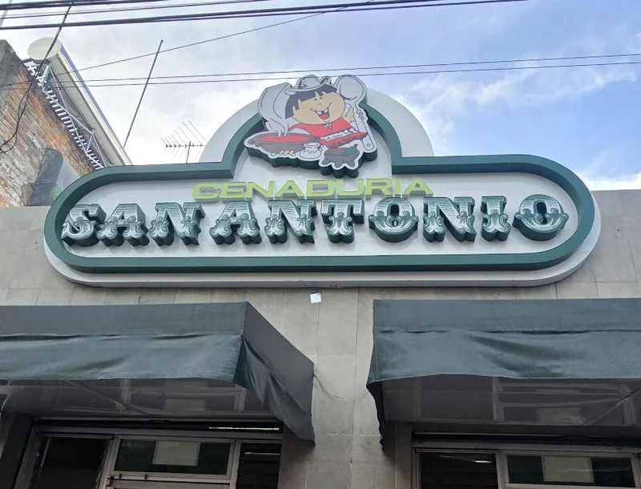
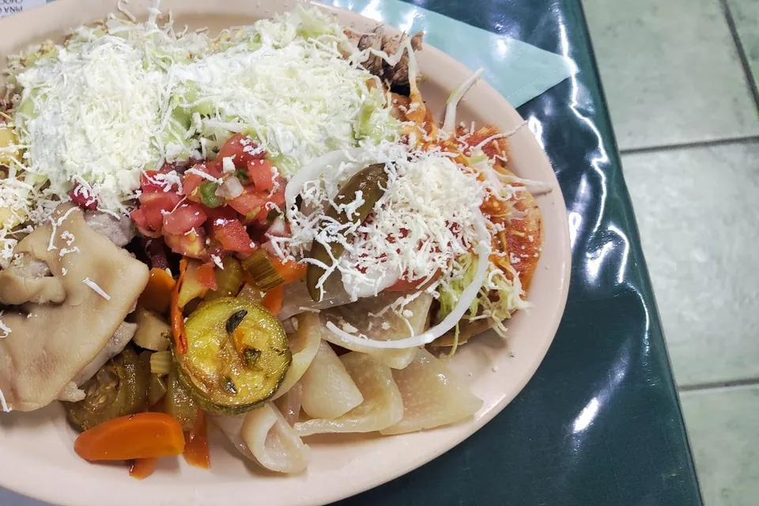
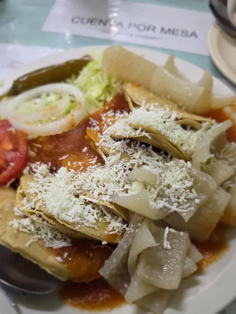
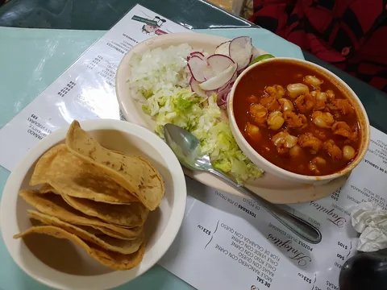
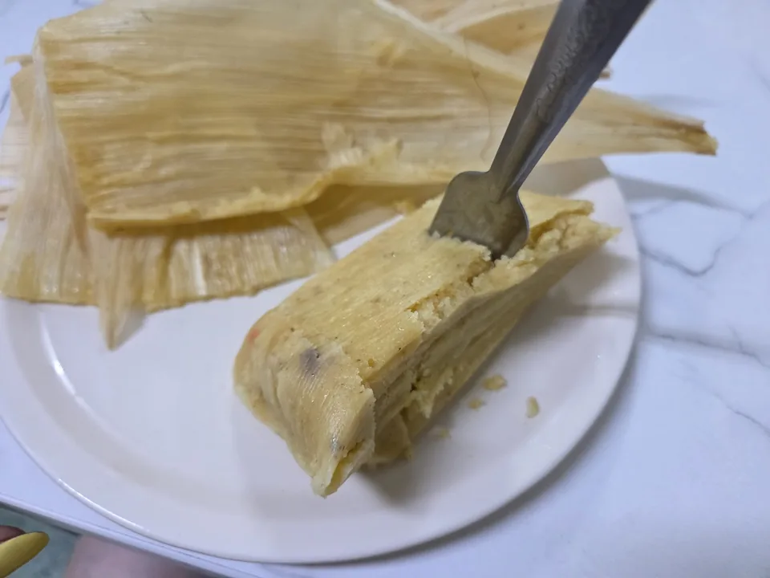
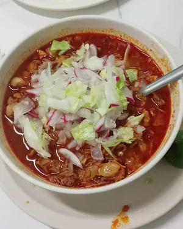
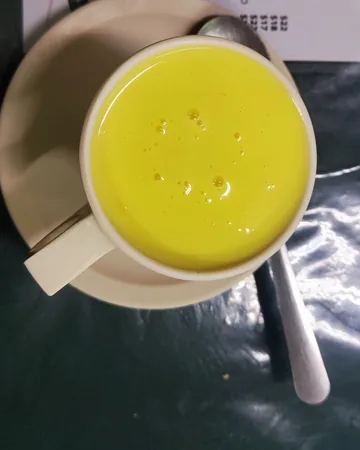
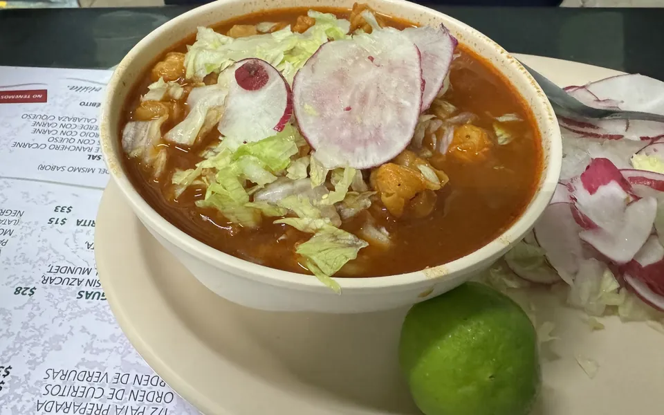

Una sola cenaduría. Desde 1971.

Enchiladas, flautas, pozole, tamales y atole. Av. José María Chávez 607, Obraje.
4.4 en Google · 6,145 opiniones
Lo que se pide en San Antonio.



-
Platillo Hidrocálido$295Recomendado Un taco, una flauta, una tostada de pollo, un sope de carne, una enchilada de queso, un trozo de pata, cueritos, verduras curtidas, crema, guacamole, verdura fresca y queso. Y de postre un tamal a su elección. Armar el mío
-
1/4 de Pollo Frito$130Acompañado de papas fritas, guacamole, verduras curtidas y verdura fresca.
-
PozolePregunta el precioMixto, rojo, de pollo.
-
EnchiladasPregunta el precioHidrocálidas, con cueritos, rellenas, rojas, de queso con guacamole.
-
Flautas, sopes y tacos de papaPregunta el precio
-
Tamales dulces y saladosPregunta el precioSeis sabores. Los eliges abajo.
Curtidos
- 1/2 pata sencilla$55
- 1/2 pata preparada$93
- Orden de cueritos$45
- Orden de verduras$45
Bebidas
- Taza de atole$24Un sabor distinto cada día.
- Café de olla$22
- Aguas frescas$28Horchata, jamaica, tamarindo.
Precios de la hoja de platillos y bebidas de su menú impreso; confirma con ellos.
Desenvuelve tu tamal.

Cuántos Platillos Hidrocálidos
Un taco, una flauta, una tostada de pollo, un sope de carne, una enchilada de queso, un trozo de pata, cueritos, verduras curtidas, crema, guacamole, verdura fresca y queso. De postre, un tamal a tu elección.
Tamal de postre
Toca un tamal para desenvolverlo.
Atole del día
- Todavía no hay renglones. Elige un platillo o toca el + en la carta.
Precios de su menú impreso; te confirman todo por WhatsApp.
Todas las estrellas, sin esconder una.
53,972
41,298
3495
2150
1230
Cada plato, unas 200 opiniones.
4.4
6,145 opiniones en Google

Kenia Millán
«Para mi, las enchiladas más sabrosas de Aguascalientes. (...) aunque veas una fila enorme afuera del establecimiento no tardarás en entrar.»
Google Maps
Ingrid Hernandez
«El Atole de vainilla estaba delicioso, las flautas y las enchiladas divinas. (...) Los tamales dulces deliciosos.»
Google Maps
Rafael León
«De los pocos lugares donde uno puede disfrutar un sazón casero.»
Google Maps
Se cena de 5 a 11. Los jueves, cerrado.
Abierto de 5 a 11 p.m. Domingo desde las 4.
| Día | Horario | Atole |
|---|---|---|
| Lunes | 5 a 11 p.m. | Vainilla |
| Martes | 5 a 11 p.m. | Cacahuate |
| Miércoles | 5 a 11 p.m. | Chocolate |
| Jueves | Cerrado | |
| Viernes | 5 a 11 p.m. | Pregúntalo |
| Sábado | 5 a 11 p.m. | Nuez |
| Domingo | 4 a 11 p.m. | Coco |
Los atoles son los del cartel de la puerta.

- Consumo en el lugar
- Retiros en la puerta
- Entrega sin contacto
- Aceptamos tarjeta
Hoy se cena en San Antonio.
Falta armar la cuenta.
Elige tu platillo, tu tamal y tu atole, y pregunta a qué hora puedes pasar.
Todo listo para completar
- Que el 449 916 6522 reciba WhatsApp
- Carta completa con precios: pozole, enchiladas, flautas, tamales
- Atole del viernes; confirmar 1971 y cierre de jueves
- Si aceptan pedidos para llevar y a qué hora
- Fotos propias y permiso para las de clientes de Google
- Logo en alta, Instagram y TikTok oficiales
- Link de cobro. Tarjeta en línea: te mandamos el link.
Pásanoslo por el mismo chat donde te llegó esta muestra.

«Un delicioso clásico que se mantiene vigente.»
Rebeca SV · Google Maps